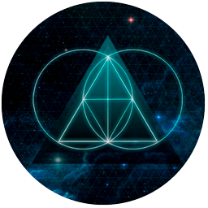

Proyectos personales
Proyectos de código abierto para diferentes motores gráficos de videojuegos como Unity, Unreal, Godot en github. También algunos videojuegos oficiales distribuidos en plataformas de consola y PC/Steam.
Código Abierto
README-Template
Plantilla del README. Contiene alineación central, una imagen y un apartado de descripción.
Videojuegos

The Legend of Origen
RPG Tactico con un estilo artístico anime en el que el jugador deberá luchar contra los grandes poderes del mundo

Dungeon Quest Rush
Estrategia en mazmorras roguelike con ambientación de baja fantasía donde se lucha contra los héroes

Horizon Crystal
Estilo 3 Match, ambientado con cristales elementales al mas puro estilo Candy Crush con integraciones de plataformas

Sweet Village
Estilo 3 Match, ambientado con golosinas donde los propios jugadores crean sus niveles y ganan niveles
- 
Earth Assault
Control orbital click pointer, una mecánica con siete dinámicas (Para mentes frenéticas)